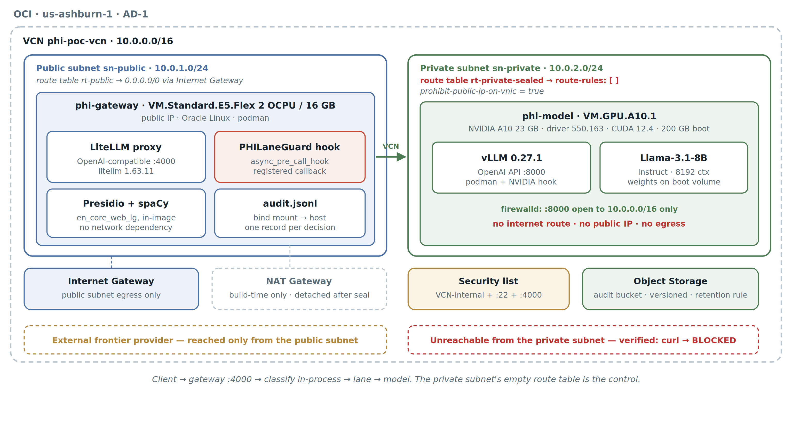
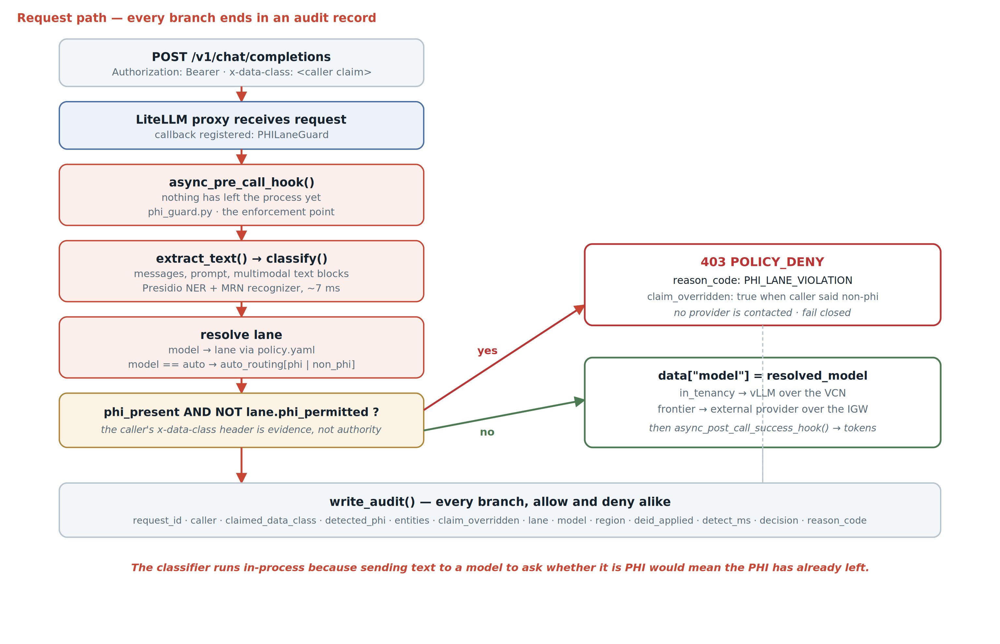

The claim
Three artifacts, thirty seconds
Everything in this build exists to make these three moments real. Two of them are failures.
403 POLICY_DENY with reason code PHI_LANE_VIOLATION. No provider is ever contacted.claim_overridden: true. Classification does not defer to the header.curl to the internet returns BLOCKED — while in-tenancy inference keeps answering.The problem
Why regulated AI pilots stall
Today the decision about whether a request carries PHI lives in application code. Each developer reasons about it personally, per service, and that judgement drifts. BAA coverage and residency posture differ per provider, and no application team tracks which is which at call time.
When compliance asks for proof that no PHI reached a non-covered provider last quarter, answering means archaeology across service logs.
So the safe response is to run everything on in-tenancy models — which sacrifices quality on the majority of requests that never touch patient data at all.
The alternative is to move the decision out of application code entirely: classify at the door, enforce with network topology, and record every decision as it happens.
Architecture
What was deployed
Two lanes with genuinely different trust boundaries. The gateway sits in a public subnet and can reach both. The model host sits in a private subnet whose route table is empty. That asymmetry is the control.

Enforcement
How the decision is made
One hook, one policy file, one route table. Classification completes before any provider is contacted, and every branch — allow and deny alike — writes an audit record.

Two decisions worth defending
- Detection is local, not an LLM call. Sending text to a model to ask whether it contains PHI means the PHI has already left the trust boundary. Presidio runs in-process, baked into the gateway image, with no network dependency — so it cannot fail open because a detection service was unreachable. Measured overhead: about 7 ms.
- The caller's claim is evidence, not authority. The
x-data-classheader is recorded, never obeyed. A developer who mislabels a request — carelessly or in good faith — does not thereby widen the egress boundary.
Policy is data, not code
A privacy officer who cannot read Python can read this, diff it across versions, and see exactly when it changed:
lanes:
in_tenancy: { phi_permitted: true, egress: none }
frontier: { phi_permitted: false, egress: internet }
on_violation: denyChanging one word opens PHI egress with no code change and no rebuild. That is the strength of the design and equally its risk — which is why the enforcement test asserts PHI executed outside the tenancy: 0 and belongs in a CI gate blocking merges to that file.
Evidence
Captured from the running system
| Scenario | Caller claim | Result | Served by |
|---|---|---|---|
| Non-PHI → frontier | non-phi | 200 ALLOW | external frontier model |
| PHI → in-tenancy | phi | 200 ALLOW | Llama-3.1-8B on A10 |
| PHI → frontier | phi | 403 DENY | — |
| PHI mislabelled | non-phi | 403 DENY | — claim overridden |
| model = auto, clean | unspecified | 200 ALLOW | policy chose frontier |
Network isolation, verified live
$ ./03-seal-subnet.sh seal
Private subnet is now: SEALED — no internet route
$ ssh -J gateway model 'curl -m 10 https://api.<provider>.com'
curl: (7) Network is unreachable
BLOCKED
$ python scenarios.py 2 # in-tenancy inference, same moment
200 ALLOW served by: hosted_vllm/meta-llama/Llama-3.1-8B-InstructThe compliance answer
PHI executed outside the tenancy: 0
Caller data-class claims overridden: 1
Reason codes: { OK: 3, PHI_LANE_VIOLATION: 2 }That first line is the point. “Did any PHI reach a non-covered provider?” is asked every quarter and today answered by log archaeology. Here it is a query against a structured record written on every branch.
Findings
What broke, and what it means
Naming your own gaps is most of what separates a credible pattern from an oversold prototype. These were found by testing the classifier separately from the pipeline — which is the only reason they were found at all.
Silent detection miss
Presidio's phone recognizer returns a flat 0.4 confidence for US numbers regardless of format — below the 0.5 global floor. Phone numbers were being missed with no error, no warning, no log line. Fixed with a per-entity threshold in policy.yaml. The dangerous failure in a safety system is not the crash; it is the silence.
Wrong identifier attribution
A test SSN matched as PHONE_NUMBER rather than US_SSN. The routing decision was still correct, but the audit record named the wrong identifier class — which matters when that record is the compliance artifact.
Deliberate over-denial
A hospital staff phone number classifies as PHI. So does a bare clinician name. Neither is patient information. The system over-denies rather than under-denies, which is the correct direction for a control — but production needs context rules, an allow-list, and a documented exception path.
Site-specific identifiers are invisible
A trial subject ID (“Subject 0042 in cohort B…”) passes undetected, because Presidio ships recognizers for universal identifiers only. The MRN recognizer here is hand-written for exactly that reason. This is the honest answer to “would this work for our data?” — universal identifiers work out of the box; your formats are a scoping conversation.
Platform notes
| Boot volume | Allocating 200 GB does not grow the filesystem. oci-growfs must run before pulling large images; the vLLM image alone exceeds the default root. |
| GPU image | The A10 shape lookup returned an Oracle Linux 7 build. Podman 1.6.4 predates CDI, so nvidia.com/gpu=all fails; the legacy NVIDIA OCI prestart hook works. |
| Quota vs capacity | Quota granted at tenancy scope is not capacity available in a given availability domain. Verify the specific AD, not the general limit. |
| Retention lock | OCI retention rules can be locked, after which the bucket cannot be deleted until the period expires. Left unlocked here deliberately. |
Scope boundaries
- Not HIPAA Safe Harbor. Safe Harbor enumerates 18 identifier classes; this detects a subset. Imagery, biometrics and device identifiers are out of scope entirely.
- The de-identification lane is a stub.
deid_appliedis always false. The architecture has the seam; the implementation does not fill it. - No HA. Single gateway instance, single model host. This proves a control surface, not an SLA.
- Enforcement, not certification. This enforces where inference runs and records what happened. BAA coverage, clinical validation and the de-identification method remain the customer's responsibility.
Phase two
The same control, native to the platform
The proof above uses a purpose-built gateway. The next question was whether the same control survives being implemented the way a real platform would consume it — as a registered guardrail inside LiteLLM, rather than a bolted-on callback.
It does. Classification runs in-process before egress, PHI-bearing requests to non-permitted models are denied, and the platform records the intervention itself. Steady-state overhead is under 6 ms.
What the platform records, and what it doesn't
| Audit element | Recorded by |
|---|---|
| Which guardrail fired, status, duration | LiteLLM, natively |
| Reason code, detected entities, overridden claim | the guardrail — redacted by design |
The platform stores guardrail_response: "REDACTED_BY_LITELM", which is a sound default — a guardrail's response could echo the very content it exists to protect. The consequence is a clean split: the platform supplies the execution record, the guard supplies the compliance reasoning, and they join on request ID.
Config is the right home for a compliance control
- A config-defined guardrail cannot be disabled from the console. No toggle exists in the UI.
- It cannot be shadowed. Creating a same-named guardrail through the console does not override or replace it.
- The policy file is invisible to the UI. It stays a version-controlled artifact a privacy officer can review, outside the console's reach.
That is specific to guardrails, and worth stating precisely rather than generalising — store_prompts_in_spend_logs behaves the opposite way, and can be set in the console to override config.
Finding
The control plane is in scope
The gateway's database holds keys, teams, spend and model configuration. It can also hold request and response content. The default is safe — but the setting that changes it is a console click, and the content lands somewhere the documentation doesn't name.
Verification returns a false negative
With prompt storage enabled, content is written to proxy_server_request and response — not the messages column the docs point at. A compliance query against messages comes back clean while the full prompt, including patient identifiers, sits two columns over.
The toggle overrides config
Setting it in the config file requires a restart. Setting it in the Admin UI does not, and the console value wins. A deployment whose config was reviewed and approved can be changed without a diff, a deployment, or a change-control record. The operative control is admin RBAC, not config review.
Behaviour varies by version
Upstream reports on earlier releases describe the same setting storing nothing at all. On the version tested, it stores content in unexpected columns. Neither default is safe to assume — pin a version and verify on it.
The recommendation: treat the control-plane database as in scope for regulated data regardless of configuration, and audit it column-agnostically rather than against the documented field.
The pattern
The dangerous failure is the silent one
Five independent failures surfaced across this work. None of them announced itself. Every one looked like success from the outside.
| A classifier below its threshold | Presidio's phone recognizer returns a flat 0.4 for US numbers, under the 0.5 default. Phone numbers were undetected. No error, no warning. |
| A firewall command that hangs | Called before the service answered on D-Bus, it blocked indefinitely — and || true catches a bad exit code, not a hang. |
| A teardown that tears nothing down | An invalid wait-state argument meant the script exited before deleting anything, while a GPU kept billing. |
| A query reading the wrong column | The documented field stays empty while the content is stored elsewhere in the same row. |
| A test panel reporting a false pass | The console calls an interface the base class implements as a no-op, so it reports content allowed while the API denies it. |
A crash tells you. A hang, a default that returns nothing, or a check that reads the wrong field does not. This is the argument for testing a control through the path it will actually be exercised on, rather than the path that is convenient to click.
Generalization
The same shape, a different policy file
PHI is one instance of a pattern that recurs across every regulated conversation: classify at the door, enforce with topology, record the decision.
| Data residency | EU and sovereign workloads pinned to in-region execution; everything else free to route |
| Export control | ITAR / EAR-controlled technical data restricted to a tenancy-bound lane |
| Financial services | Material non-public information barred from external providers |
| Multi-tenant SaaS | Per-tenant isolation where one customer's data may never transit a shared model |
| Source code | Proprietary code excluded from external inference while docs and tickets route freely |
Built in one afternoon by one engineer, including three platform defects worked around live. That is only worth something if the next engineer does not have to rediscover it — which is the argument for making it a field pattern rather than a demo.